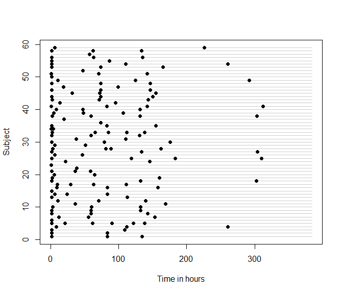

The goal of the IrregLong package is to provide functions for handling longitudinal data subject to irregular observation.
Why might you need this package?
If you have longitudinal data where the assessment times vary among subjects, you need to ask why they vary, whether time assessment times are associated with your outcome, and what the appropriate method of analysis is.
For example, suppose you were estimating the rate of growth among newborns and had data collected as part of usual care. Typically, weight and length are measured at every clinical encounter, which would include birth and 2-month vaccinations. However, newborns who are slow to regain their birthweight will be seen more frequently. Consequently, observations corresponding to newborns who are growing slowly are over-represented in your data, which will lead to under-estimation of the rate of growth unless you account for the informative nature of the visit process.
The IrregLong package will help you assess how irregular the assessment times are, whether there are measured predictors of assessment times, and to analyse your data accounting for irregularity.
Installation
You can install the development version of IrregLong through Github:
devtools::install_github("epullenayegum/Irreglong")Examining the extent of irregularity
Before fitting any models, it is wise to examine the extent of irregularity in the data. In many cases, a sensible question is ``How closely does this data resemble repeated measures data?’’ A quick visual way of answering this question is through an abacus plot:
abacus.plot(n=59,time="time",id="Subject",data=data,tmin=0,tmax=16*24,
xlab.abacus="Time in hours",pch=16,col.abacus=gray(0.8))
Is the irregularity informative?
If you decide that the extent of irregularity is sufficient to warrant considering the irregularity in your analysis, the next question to consider is whether the irregularity is informative. Irregularity that is purely random (termed “Assessment Completely at Random”, or ACAR) does not need to be accounted for, whereas irregularity that is associated with the outcome of interest should be considered in the analysis. Irregularity that results in an assessment process that is conditionally independent of the outcome at any given time conditionally on previously observed data (termed “Assessment at Random”, or AAR) can be handled through inverse-intensity weighting. Irregularity that results in an assessment process that is dependent on the outcome at any given time (termed “Assessment Not at Random”, or ANAR) is best handled through sensitivity analysis, for which methods are currently being developed. Specific cases of ANAR, when assessment and outcome processes are conditionally independent given random effects, can be handled through semi-parametric joint models.
Given specific assumptions about the possible nature of AAR, it is possible to examine whether there is evidence against ACAR. Most commonly, an analyst specifies a proportional intensity model for the assessment times given previously observed covariates; intensity rate ratios that differ from 1 provide evidence against ACAR. The function iiw.weights can help you model the assessment intensity, assuming a proportional rates model. The example below uses data from the Phenobarb dataset in the MEMSS package and shows that serum concentration of phenobarbital at the last assessment is associated with subsequent assessment intensity, suggesting that the ACAR assumption is not tenable.
i <- iiw.weights(Surv(time.lag,time,event)~I(conc.lag>0 & conc.lag<=20) +
I(conc.lag>20 & conc.lag<=30) + I(conc.lag>30) +
cluster(Subject),id="Subject",time="time",event="event",data=data,
invariant=c("Subject","Wt"),lagvars=c("time","conc"),maxfu=16*24,lagfirst=c(0,0),first=FALSE)
i$m
#> Call:
#> coxph(formula = Surv(time.lag, time, event) ~ I(conc.lag > 0 &
#> conc.lag <= 20) + I(conc.lag > 20 & conc.lag <= 30) + I(conc.lag >
#> 30), data = datacox, cluster = Subject)
#>
#> coef exp(coef) se(coef) robust se
#> I(conc.lag > 0 & conc.lag <= 20)TRUE -2.27453 0.10284 0.33148 0.40497
#> I(conc.lag > 20 & conc.lag <= 30)TRUE -2.67331 0.06902 0.33681 0.37398
#> I(conc.lag > 30)TRUE -2.99982 0.04980 0.42794 0.46762
#> z p
#> I(conc.lag > 0 & conc.lag <= 20)TRUE -5.617 1.95e-08
#> I(conc.lag > 20 & conc.lag <= 30)TRUE -7.148 8.79e-13
#> I(conc.lag > 30)TRUE -6.415 1.41e-10
#>
#> Likelihood ratio test=69.47 on 3 df, p=5.542e-15
#> n= 213, number of events= 154Accounting for irregularity when assuming Assessment At Random
Inverse-intensity weighted GEEs are a popular way to account for AAR. These can be fitted using the iiwgee function
iiwgee <- iiwgee(conc ~ time + I(time^3) + log(time),Surv(time.lag,time,event)~I(conc.lag>0 & conc.lag<=20) +
I(conc.lag>20 & conc.lag<=30) + I(conc.lag>30) +cluster(id),
formulanull=NULL,id="id",time="time",event="event",data=data,
invariant=c("id","Wt"),lagvars=c("time","conc"),maxfu=16*24,lagfirst=c(0,0),first=FALSE)
summary(iiwgee$geefit)
#>
#> Call:
#> geeglm(formula = formulagee, family = family, data = data, weights = useweight,
#> id = iddup, corstr = "independence")
#>
#> Coefficients:
#> Estimate Std.err Wald Pr(>|W|)
#> (Intercept) 1.912e+01 1.268e+00 227.512 < 2e-16 ***
#> time 1.060e-01 2.571e-02 16.988 3.76e-05 ***
#> I(time^3) -1.469e-06 2.079e-07 49.917 1.60e-12 ***
#> log(time) 7.501e-01 7.583e-01 0.978 0.323
#> ---
#> Signif. codes: 0 '***' 0.001 '**' 0.01 '*' 0.05 '.' 0.1 ' ' 1
#>
#> Correlation structure = independence
#> Estimated Scale Parameters:
#>
#> Estimate Std.err
#> (Intercept) 57.87 27.08
#> Number of clusters: 59 Maximum cluster size: 6Alternative approaches
Multiple outputation is similar to weighting; in each “outputted” dataset observations are selected with probability inversely proportional to the observation intensity. Multiple outputation is thus particularly useful when you want to implement an analytic model that does not permit weighting (for example, a GLMM). The package include the functions outputation and mo for implementing multiple outputation.
If you want to assume the specific case of ANAR that arises when assessment and outcome processes are conditionally independent given random effects, semi-parametric joint models can be used. The IrregLong package includes a function for fitting the Liang semi-parametric joint model.